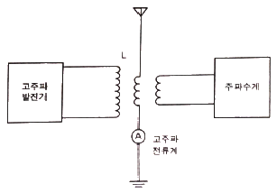
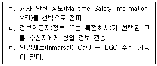
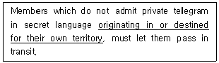
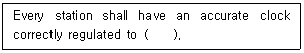
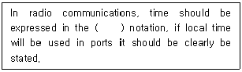
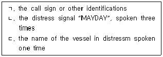
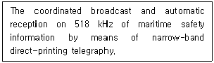
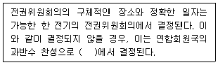
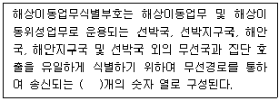

전파전자통신기능사 (2022-06-25 기출문제)
1과목: 임의 구분
1. 다음 중 점유주파수대역폭이 가장 좁은 방식은?
- AM(Amplitude Modulation)
- FM(Frequency Modulation)
- SSB(Single-sideband)
- FS(Frequency Shjft)
(정답률: 60%)

2. FET에서 채널이 완전히 닫혀 드레인 전류(ID)가 흐르지 않게 되는 때의 게이트-소스 사이 전압(VGS(off))을 무엇이라 하는가?
- Gate-Off 전압
- Pinch-Off 전압
- Source-Off 전압
- Drain-Off 전압
(정답률: 60%)
3. FM 수신기에서 리미터의 사용 목적으로 가장 타당한 것은?
- 페이딩이나 잡음에 의해 발생된 진폭변화를 제거하기 위해
- 기생진동을 방지하기 위해
- 고조파에 의한 주파수의 찌그러짐을 방지하기 위해
- 전원전압의 변동을 방지하기 위해
(정답률: 50%)
4. Radar의 기능과 원리 설명으로 틀린 것은?
- Radio Detection and Ranging의 약자이다.
- 야간이나 눈, 비, 안개 등으로 시계가 불량할 때도 사용가능하다.
- 어선의 경우에는 위치측정용으로만 사용하고 어망 감시용으로 사용이 불가능하다.
- 안테나에서 전파를 발사하여 먼 거리에 있는 물체에서 반사되어 발사하는 전파를 받아 물체의 존재를 확인하고 위치를 측정하는 장치이다.
(정답률: 72%)
5. GPS 시스템의 우주부문-지상부문-사용자부문의 구성으로 순서대로 바르게 나타낸 것은?
- GPS 위성 – 지상 제어국 – GPS 수신기
- GPS 위성 – 지구국 - VSAT
- INTELSAT – 지구국 – GPS 수신기
- INTELSAT – 지상 제어국 – VSAT
(정답률: 69%)
6. 다음 중 FM 수신기를 구성하는 회로에 속하지 않는 것은?
- 진폭제한기
- 스퀠치회로
- 프리엠퍼시스
- 고주파증폭기
(정답률: 58%)
7. 주파수가 높아지면 파장은 어떻게 되는가?
- 변함이 없다.
- 짧아진다.
- 길어진다.
- 짧아졌다가 길어진다.
(정답률: 87%)
8. 다음 중 진행파를 이용한 안테나는?
- 롬빅 안테나
- 폴디드 다이폴 안테나
- 루프 안테나
- 반파장 다이폴 안테나
(정답률: 45%)
9. 다음 중 파장이 짧아 고유 파장의 안테나를 얻기 쉬운 것은?
- 장파대 안테나
- 장·중파대 안테나
- 초단파대 안테나
- 초장파대 안테나
(정답률: 80%)
10. 도체에 교류 전류를 흘리면 중심부일수록 주위의 자속 변화가 많기 때문에 그 변화에 의한 역기전력이 커져 전류가 흐르기 어렵게 되는 현상을 무엇이라 하는가?
- 외부 효과
- 상승 효과
- 하강 효과
- 표피 효과
(정답률: 62%)
11. 특성 임피던스가 5[Ω], 부하 임피던스가 10[Ω]인 선로에서 정재파비는 얼마인가?
- 0.5
- 1
- 1.5
- 2
(정답률: 48%)
12. 100[Mbps]를 MB/s로 변환하면 얼마가 되는가? (단, 1[byte]는 8[bit]이며, MB[Mega Byte]이다.)
- 10[MB/s]
- 12.5[MB/s]
- 15[MB/s]
- 17.5[MB/s]
(정답률: 68%)
13. Two –Way(양방향) VHF 설명으로 틀린 것은?
- 조난 현장에서 생존정과 구조정 상호간 또는 생존정과 구조 항공기 상호간에 조난자의 구조에 대한 휴대용 무선 통신기이다.
- 색상이 해상에서 눈에 잘 띄는 노란색 또는 주황색이거나 이러한 색상 표시가 되어있다.
- 스켈치(Squelch)기능이 있어 잡음이 들리지 않도록 레버를 조종할 수 있다.
- Ch.16번(주파수 156.8MHz)을 사용하여 조난 현장에서 구조에 집중할 수 있도록 채널이 고정된 장점이 있다.
(정답률: 66%)
14. 선박에 설치된 위성EPIRB의 자유부상 조건을 바르게 나타낸 것은?
- 설치대의 압력센서가 수심 12미터 이내
- 설치대의 압력센서가 수심 8미터 이내
- 설치대의 압력센서가 수심 4미터 이내
- 설치대의 압력센서가 수심 20미터 이내
(정답률: 65%)
15. 위성지구국의 통신중계용 저잡음 안테나로 주로 사용되는 것은?
- 휩 안테나
- 무지향성 안테나
- 카세그레인 안테나
- 반파장 다이폴 안테나
(정답률: 48%)
16. Inmarsat 시스템에서 고기능 집단호출 장치로서 전해역 또는 특정 해역의 항행경보, 기상경보 등의 해사안전정보를 수신하는 장치는?
- NAVTEX
- HF대 NBDP
- DSC
- EGC
(정답률: 52%)
17. 다음 중 수퍼헤테로다인 방식의 수신기에서 중간주파수를 높게 선정했을 때 나타나는 특징과 관계가 없는 것은?
- 영상 주파수에 대한 방해가 개선된다.
- 인입 현상이 개선된다.
- 충실도를 좋게 할 수 있다.
- 근접 주파수 혼신이 개선된다.
(정답률: 53%)
18. 다음 중 AM송신기의 S/N비 측정에 관한 사항으로 잘못된 것은?
- 직선 검파기와 송신기는 소결합시켜 동조시킨다.
- S/N비는 백분율[%]로 나타낸다.
- 변조도는 약 70~80[%]로 한다.
- 가청 주파발진기는 1,000[Hz]로 한다.
(정답률: 46%)
19. 의도하는 송신 주파수 이외의 불필요한 전파 복사에 포함되는 것은 무엇인가?
- PLL(Phase Lock Loop)
- 여진 전력 증폭
- 플레이트 변조
- 스퓨리어스 복사
(정답률: 72%)
20. 다음은 안테나의 고유 주파수를 측정하기 위한 회로이다. 고주파 전류계(A)의 지시값 및 고주파 발진기와 안테나 사이의 코일(L)의 결합은 어떻게 되는 것이 좋은가?

- 전류계 지시값 : 최소, 코일의 결합, 소결합
- 전류계 지시값 : 최소, 코일의 결합, 밀결합
- 전류계 지시값 : 최대, 코일의 결합, 소결합
- 전류계 지시값 : 최대, 코일의 결합, 밀결합
(정답률: 53%)
2과목: 임의 구분
21. 배전압 정류회로에서 120[V]의 교류전압을 정류할 때 최대 정류전압은 얼마인가? (단, √2 = 1.4로 계산하시오)
- 336[V]
- 84[V]
- 168[V]
- 62[V]
(정답률: 45%)
22. 어느 저항에 5[mA]의 전류가 흐르고 있으며, 저항 양끝의 전압은 15[V]이다. 저항 R의 값은 얼마인가?
- 1[kΩ]
- 3[kΩ]
- 5[kΩ]
- 15[kΩ]
(정답률: 79%)
23. 다음 중 용어 정리로서 잘못 표기한 것은?
- VHF통신기(Very High Frequency) : 초고주파 무선통신기
- IMO(International Maritime Organization) : 국제해사기구
- ITU(International Telecommunication Union) : 국제전기통신연합
- SMCP(Standard Marine Communication Phrases) : 표준 해사 통신용어
(정답률: 50%)
24. 디지털선택호출장치(DSC)가 위성항법시스템(GNSS) 등으로부터 위치정보를 받지 못하거나 수동으로 입력한 위치정보가 몇 시간 이상 경과 할 경우에 경보를 발생할 수 있어야 하는가?
- 1시간
- 2시간
- 3시간
- 4시간
(정답률: 45%)
25. NAVTEX 수신기는 어떤 통신을 수신한 경우에 경보를 수동으로만 정지시킬 수 있다. 이 경우에 해당하는 것은?
- 선택호출
- 수색 및 구조정보
- 일반통신
- 개별호출
(정답률: 84%)
26. 다음 중 고기능 집단 호출 EGC(Enhanced Group Call) 무선설비에 해당하는 설명으로 옳은 것을 모두 고른 것은?

- ㄱ, ㄴ
- ㄴ, ㄷ
- ㄱ, ㄷ
- ㄱ, ㄴ, ㄷ
(정답률: 48%)
27. 다음 문장의 밑줄 친 부분의 우리말 번역으로 옳은 것은?

- 자국의 영역에서 발하거나 자국의 영역으로 도착하는
- 자국의 영역으로부터 발생되거나 소멸된
- 자국의 영토 확장을 위하여 기원되거나 정하여진
- 자국의 영토로 향해 출발하거나 그것이 예정된
(정답률: 69%)
28. “국제 NAVTEX 업무”란 영어를 사용하여 ( )로 행하는 협대역직접인쇄전신(NBDP)에 의한 해사안전정보(MSI)의 조정된 방송 및 그 자동 수신을 말한다. 괄호 안에 들어갈 주파수는?
- 518[kHz]
- 120[MHz]
- 312[Hz]
- 620[GHz]
(정답률: 82%)
29. 다음 문장의 괄호 안에 가장 적합한 것은?

- UTC
- KST
- ITU
- KMT
(정답률: 74%)
30. 해상이동업무에 있어서 상대적으로 통신 우선순위가 가장 낮은 것은?
- Distress calls, distress messages and distress traffic
- Safety Communications
- Urgency Communications
- Other Communications
(정답률: 72%)
31. “How do you read me?”의 무서절차 용어로서 적합한 의미는?
- 감도는 어떠합니까?
- 어떻게 읽을까요?
- 어떻게 읽을 수 있습니까?
- 어떻게 이해하셨습니까?
(정답률: 79%)
32. 다음 중 알파벳 통화표의 발음 강세를 실선으로 표시한 것으로 틀린 것은?
- Y : YANG KEY
- K : KEY LOH
- P : PAH PAH
- X : ECKS RAY
(정답률: 58%)
33. 다음 중 무선통신 약어의 정의로 틀린 것은?
- CS : Call sign
- CFM : Confirm
- BQ : A replay to an RQ
- AB : All after
(정답률: 79%)
34. 다음 질문에 대한 대답으로 전파규칙상 가장 적합한 것은?
- The intelligibility of your signals is severely.
- The intelligibility of your signals is powerful.
- The intelligibility of your signals is good.
- The intelligibility of your signals is static.
(정답률: 63%)
35. 다음 중 선박에서 주로 사용하는 항해 거리를 나타내는 해사용어는?
- mile
- km
- nautical mile
- marine mile
(정답률: 63%)
36. 다음 문장의 괄호 안에 들어갈 알맞은 말은?

- 12hour UTC
- 24hour UTC
- 12hour LT
- 24hour LT
(정답률: 79%)
37. 다음 중 조난통보를 알리기 위해 사용하는 용어는?
- MAYDAY
- PAN-PAN
- SECURITE
- STAND-BY
(정답률: 67%)
38. 주파수 156.8[MHz], VHF 채널 16으로 송신되는 조난호출의 형식에 포함되는 것으로 옳은 것을 모두 고른 것은?

- ㄱ, ㄷ
- ㄴ, ㄷ
- ㄱ, ㄴ
- ㄱ, ㄴ, ㄷ
(정답률: 48%)
39. 다음 중 NAVAREA Coordinator의 책임이 아닌 것은?
- 선박에 설치되는 NAVTEX 수신기의 형식승인
- NAVAREA내에서 수신된 항해관련 정보에 대한 접근
- IMO/IHO/WMO 매뉴얼에 따라 해사안전정보의 경고문 작성
- SOLAS 협약에 따라 NAVAREA 경고방송의 지휘 및 통제
(정답률: 39%)
40. 다음 문장은 무엇에 대한 설명인가?

- International NAVTEX
- International SafetyNET
- International routing service
- Notice to Mariners
(정답률: 74%)
3과목: 임의 구분
41. 다음 중 전파법의 목적으로 볼 수 없는 것은?
- 해상안전 운항의 증진
- 전파의 효율적인 이용 및 관리
- 전파관련 분야의 진흥
- 전파이용과 전파에 관한 기술의 개발
(정답률: 74%)
42. 전파에너지를 전송하기 위하여 송신장치 또는 수신장치와 안테나 사이를 연결하는 선을 무엇이라 하는가?
- 공급선
- 급전선
- 전력선
- 송수신선
(정답률: 72%)
43. 다음 중 과학기술정보통신부가 전파법에 따라 전파자원을 확보하기 위하여 마련해야 할 시책으로 틀린 것은?
- 새로운 주파수의 이용기술 개발
- 이용 중인 주파수의 이용효율 향상
- 주파수의 국내 등록
- 국가간 전파의 혼신을 없애고 방지하기 위한 협의·조정
(정답률: 60%)
44. 과학기술정보통신부장관이 전파자원이 공평하고 효율적인 이용을 촉진하기 위하여 시행하는 사항으로 틀린 것은?
- 주파수의 공동작용
- 주파수분배의 변경
- 새로운 전파자원의 개발
- 주파수회수 또는 주파수재배치
(정답률: 48%)
45. 다음 중 과학기술정보통신부장관이 청문을 하여야 하는 경우에 해당되지 않는 경우는?
- 주파수 회수
- 주파수할당의 취소
- 주파수 재배치
- 기술자격의 정지
(정답률: 46%)
46. 허가를 받고 운용해야 할 무선국을 허가를 받지 아니하고 개설하거나 운용한 자에 대한 벌칙은?
- 1년 이하의 징역 또는 1천만원 이하의 벌금
- 2년 이하의 징역 또는 2천만원 이하의 벌금
- 3년 이하의 징역 또는 3천만원 이하의 벌금
- 4년 이하의 징역 또는 4천만원 이하의 벌금
(정답률: 56%)
47. 다음 중 무선국 허가증의 기재사항으로 옳지 않은 것은?
- 허가연월일 및 허가번호
- 무선국의 목적
- 운용 의무시간
- 무선종사자의 자격 및 정원
(정답률: 60%)
48. 다음 중 무선통신의 원칙으로 적합하지 않은 것은?
- 무선통신의 내용은 필요 최소한의 사항으로 이루어져야 한다.
- 무선통신에 사용하는 용어는 가능한 한 간명해야 한다.
- 무선통신을 하는 때에는 정확하게 송신하여야 하며, 오류를 인지한 경우에는 즉시 정정하여야 한다.
- 무선통신을 하는 때에는 보안을 위해 자국의 표지 부호를 붙이지 않는다.
(정답률: 73%)
49. 무선전화에서의 긴급호출 시 사용하는 용어는?
- MAYDAY
- PAN PAN
- SECURITY
- SOS
(정답률: 55%)
50. 다음 중 수신설비의 기술기준으로 잘못된 것은?
- 수신주파수는 운용범위 이내일 것
- 선택도가 클 것
- 내부잡음이 적을 것
- 감도는 높은 신호입력에서만 양호할 것
(정답률: 70%)
51. 다음 중 과학기술정보통신부장관이 무선설비의 공동사용 명령을 할 경우 고려해야 할 사항이 아닌 것은?
- 전파의 혼신발생 가능 여부
- 건물·옥상·철탑 등의 안전 여부
- 건물 또는 부지의 임차 가능 여부
- 무선설비의 적합성평가 시행 여부
(정답률: 34%)
52. 다음 중 무선설비의 위탁운용 또는 공동 사용할 수 있는 무선설비가 아닌 것은?
- 무선국의 안테나설치대
- 송신설비 및 수신설비
- 아마추어국의 무선설비
- 우주국 무선설비
(정답률: 60%)
53. 다음 중 국제전파관계법규에서 가장 최우선적인 규정은?
- 국제전기통신연합협약
- 전파통신규칙
- 국제전기통신규칙
- 국제전기통신연합헌장
(정답률: 50%)
54. 다음 문장의 괄호 안에 들어갈 알맞은 것은?

- 이사회
- 사무총국
- 전파통신총회
- 전파관리위원회
(정답률: 64%)
55. ITU에서 전파규칙(Radio Regulation)의 제·개정을 하는 곳은?
- 사무총국
- 세계전파통신회의
- 전기통신개발국
- 전기통신표준화국
(정답률: 67%)
56. 전파 업무의 모든 송신은 식별신호를 수반하여야 한다. 예외적으로 식별신호를 수반하지 아니하여도 무방한 경우는?
- 방송업무를 행하는 경우
- 아마추어업무를 행하는 경우
- 구명이동국(구명부기국 등)이 조난신호를 자동적으로 송신하는 경우
- 406MHz의 주파수대역에서 운용하는 위성비상위치지시용 무선표지에 의해 송신하는 경우
(정답률: 43%)
57. 다음 문장의 괄호 안에 들어갈 알맞은 것은?

- 3
- 6
- 9
- 12
(정답률: 70%)
58. 다음 중 통신시설의 통제구역에 대한 정의로서 가장 적절한 것은?
- 비인가자의 출입이 금지되는 보안성 극히 중요한 구역
- 비인가지의 접근을 방지하기 위해 출입 안내가 요구되는 구역
- 통신시설 등을 보호하기 위해 경비원에 의해 일반인의 감시가 요구되는 구역
- 주요통신시설에 대하여 모든 출입구역이 금지되는 구역
(정답률: 62%)
59. 다음 중 자재보안과 관련된 보호방책으로 잘못된 사항은?
- 통신소 출입문 보호구역 표시
- 자재의 취급자수 최소화
- 휴대하기가 용이하고 중량이 가벼운 용기를 사용
- 가능한 인편으로 전달
(정답률: 43%)
60. 통신보안 위규사항 중 보안자재 및 비밀 통신제원의 누설에 속하지 않는 것은?
- 암호와 평문의 혼용
- 암호문의 평문 이중송신 금지
- 비인가된 아모, 음어, 약호 사용
- 통신 운영에 유해한 사항
(정답률: 46%)